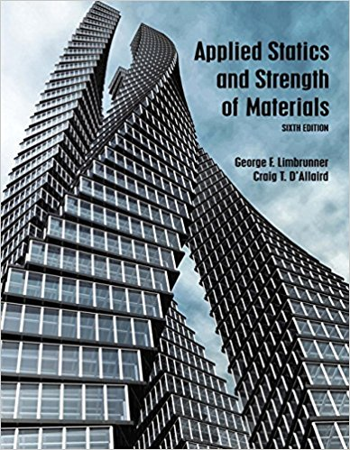

General Information | Textbook | Useful Links | Course Grading | Topics Covered | Course Description | Course Objectives | Class policies | Disability Services | Mental Health Services
| Class summary (will be updated as course progresses) | |||
|---|---|---|---|
| Date | Material Covered | Homework | Add'l. Information |
| Jan 31 | Chapter 1 | 1,3,6,7,13,15,23,25, 31,33,37 and Homework 1 |
My notes on units |
| Feb 7 | Chapter 2 | 1, 3, 4, 7, 13, 15, 18, 19, 26 and Homework 2 | Submit homework by Fri 16Feb |
| Feb 14 | Chapter 3 | 1, 3, 5, 7, 9, 15, 17, 19, 21 and Homework 3 | Submit homework by Fri 23Feb |
| Feb 21 | Chapter 3 | 27, 29, 31, 33, 37 and Homework 4 | Submit homework by Fri 02Mar |
| Feb 28 | Chapter 3 | 38, 39, 42, 43, 44, 45, 65, 66, 67 and Homework 5 | Submit homework by Fri 09Mar |
| Mar 7 | Class cancelled due to weather | ||
| Mar 14 | Chapter 4 |
Takehome midterm due Wed 28Mar Chapter 4: 8, 15, 25 and Homework 6 |
Submit homework 6 by Tue 03Apr Submit midterm in class on Wed 28Mar |
| Mar 21 | Spring Break - No Class | ||
| Mar 28 | Chapter 5 - method of joints | 1,3,5,7 | Not collected but please complete by 04Apr. |
| Apr 4 | Chapter 5 - method of sections & method of frames | 9,11,15,19,43 and Homework 7 |
Textbook problems not collected but please complete by 11Apr. Submit Homework 7 by 13Apr. |
| Apr 11 | Chapter 6 - Friction | ||
| Apr 18 | Chapter 6 - Friction | ||
| Apr 25 | Chapter 7 | ||
| Chapter 8 | |||
| May 9 | Final Exam | ||
Wednesdays 5:55 pm — 9:35 pm
Lupton Hall 243
Instructor: Kevin Dusling
Instructor email:
duslink@farmingdale.edu
Course webpage: https://kdusling.github.io/teaching/Spring2018MET201.html
Applied Statics and Strength of Materials, Sixth Edition
By George F. Limbrunner, Craig D'Allaird, Leonard Spiegel
Sixth Ed. on Alibris
Sixth Ed. on AbeBooks

FSC's Academic Calendar
FSC's Final Exam Schedule
| Assignment | Grade Weight |
|---|---|
| Homework / Quizzes | 30% |
| Mid-Term Exam | 30% |
| Final Exam | 40% |
Individual course grades can be found here.
| Chapters | Topic |
|---|---|
| 2 | Principles of Statics |
| 3 | Coplanar Force Systems |
| 4 | Equilibrium of Coplanar Force Systems |
| 5 | Analysis of Structures by the Methods of Joints and Sections |
| 6 | Friction, Laws and Applications |
| 7 | Centroids and Centers of Gravity |
| 8 | Moments of Inertia of Areas |
This is a basic course in statics. Topics include resultant of a force,
equilibrium of forces, moments, couples, analysis of simple trusses,
centroids, center of gravity, moments of inertia and friction.
Prerequisite(s): MTH 130, PHY 135; Corequisite: MET 201L
Cell phone use is strictly prohibited at all times. All assignments are individual effort unless the assignment has been specifically assigned as group work. There will be no make-ups for missed homeworks, quizzes and exams. No late homework submissions are accepted. No individual extra credit will be given.
If you have a disability for which you are or may be requesting an accommodation, you are encouraged to contact both your instructor and the Disability Services Center, Roosevelt Hall, Room 151, or call 631-420-2411, or 420–2607 as soon as possible this semester.
Campus Mental Health Services provides a wide range of professional counseling services to all students. These services are free and confidential. Areas that can be addressed include: anxiety and stress management, coping and problem solving skills, relationship issues, depression, family crisis, trauma and loss, adjustment to college life and living, anger management, communication skills, substance use and abuse, and habit disorders.